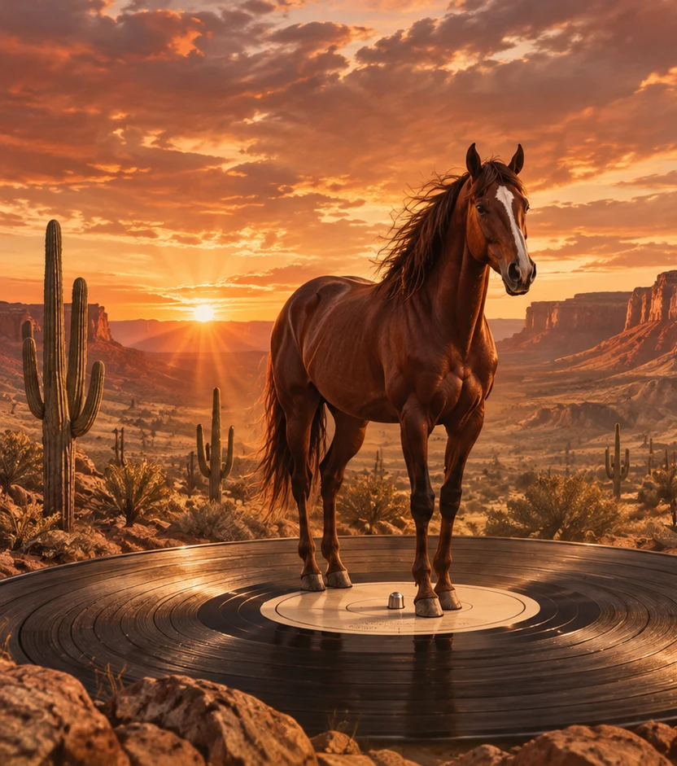

A COLLECTION OF STORIES FROM THE OPEN ROAD
GOLDEN HOUR
DRIFTER
SOMEWHERE BETWEEN THE DUST AND THE DUSK.
EXPLORE THE RECORD ↓HOUR
DRIFTERAN ALBUM FOR THE OPEN ROAD · 2026
THE DEBUT ALBUM · 2026
FOR THE MILES
THAT MAKE US.
Golden Hour Drifter is a collection of songs about leaving, returning, and everything that happens on the road in between. Warm guitars, honest words, and melodies that stay with you long after the engine cools.
These songs were made for the last light on the highway, the long way around, and the people who feel like home no matter how far you roam.
PUT THE NEEDLE DOWN ↘12 SONGS · TWO SIDES
THE RECORD.
Turn it over. There's more to the story.
DRIFTERSTEREO · 45 RPM
ANALOG HEART · DIGITAL SOUL
THE TRACKLIST
 THE GOLDEN HOUR SESSIONS · 2026
THE GOLDEN HOUR SESSIONS · 2026THE FIRST SINGLE
“GOLDEN HOUR
DRIFTER.”
A little dust on the dash. A little fire in the sky. The song for anyone who has ever followed the sunset just to see where it goes.
OUT NOW ON ALL PLATFORMS
THE ROAD GOES ON
TAKE THE
LONG WAY.
The songs sound even better when they're shared. Find a show, bring a friend, and meet us somewhere down the road.
FIND A SHOW ↗